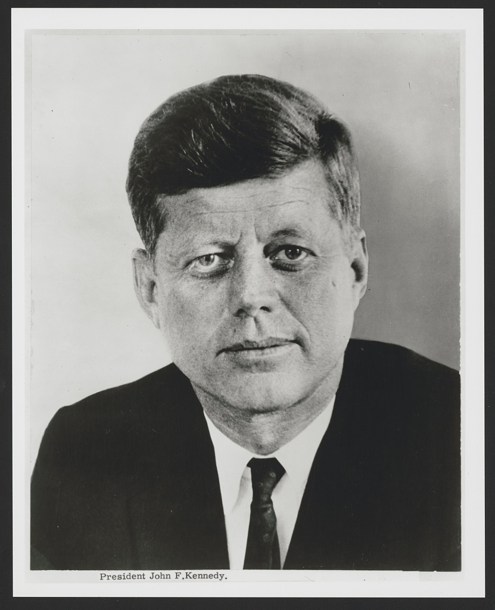

John F. Kennedy
35th President of the United States
"Those who dare to fail miserably can achieve greatly."
John F. Kennedy led the nation through pivotal Cold War events, including the Cuban Missile Crisis, and pioneered the Apollo space program.
His core message remains a timeless testament to forward-looking leadership, reminding us that monumental progress requires calculated risks rather than settling for mediocrity.